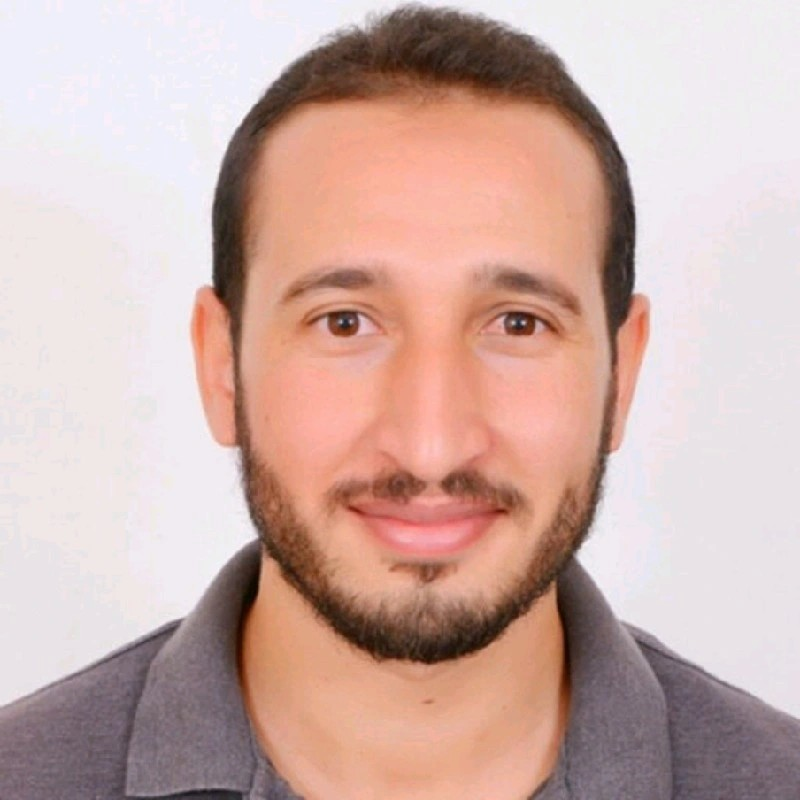

∑
01 / AnalyseLa rigueur mathématique
Étudier les équations non linéaires, leurs propriétés et les fondements théoriques des modèles.
Docteur en mathématiques appliquées et informatique • Professeur agrégé de mathématiques
À l'interface des équations aux dérivées partielles, de l'analyse numérique et de l'intelligence artificielle, j'explore des modèles mathématiques pour comprendre, optimiser et restaurer les images.

UNE VISION À LA CROISÉE DES DISCIPLINES
Une démarche qui associe rigueur théorique, expérimentation numérique et partage des connaissances.
Étudier les équations non linéaires, leurs propriétés et les fondements théoriques des modèles.
Construire des méthodes numériques pour relier les résultats mathématiques aux applications concrètes.
Proposer des cours et des ressources qui structurent le raisonnement et encouragent l'autonomie.
01 / Profil académique
Docteur de l'Université Cadi Ayyad (Faculté des sciences Semlalia, Marrakech), mes recherches se situent à l'interface de l'analyse mathématique, de la modélisation, de l'optimisation sous contraintes EDP et du traitement d'images.
02 / Activités scientifiques
Des méthodes d'analyse et de calcul numérique aux applications en traitement d'images et en intelligence artificielle.
EDP non linéaires, systèmes paraboliques, opérateurs fractionnaires, espaces à exposants variables et analyse de la bonne position des modèles.
Méthodes de volumes finis et d'éléments finis ; discrétisation, stabilité, convergence et simulation de systèmes évolutifs.
Optimisation sous contraintes EDP, problèmes de contrôle, analyse non lisse et modèles variationnels ou non variationnels.
Débruitage, préservation des structures, reconstruction, apprentissage profond, U-Net et vision par ordinateur.
Programmation et calcul : Python, MATLAB, C/C++, R, Maple, CPLEX. Rédaction scientifique : LaTeX. Langues : français, arabe, anglais et tamazight (langue maternelle).
03 / Production scientifique
Articles évalués par les pairs, contributions à des ouvrages collectifs et manuscrits soumis.
Evolution Equations and Control Theory, 21, 131–154.
Frontiers in Artificial Intelligence, 9, 1741082.
Scientific Reports, 16, article 28444.
Mathematical Methods in the Applied Sciences, 47(9), 7714–7741.
Moroccan Journal of Pure and Applied Analysis, 8(3), 401–437.
Mathematics and Intelligent Systems in Industry, Springer Proceedings in Mathematics & Statistics, vol. 534.
Advances in Applied and Computational Mathematics, Trends in Mathematics, Birkhäuser.
Manuscrit soumis à Computational and Applied Mathematics.
Manuscrit soumis à ESAIM: Mathematical Modelling and Numerical Analysis.
04 / Rayonnement scientifique
05 / Activités pédagogiques
Cours, travaux dirigés et évaluations en cycle préparatoire d'écoles d'ingénieurs.
ENSA Safi · 2024–2025 · 56 h
ENSA Safi · 2020–2021 · 56 h
ENSA Safi · 2020–2021 · 28 h
ENSA Safi · 2020–2021 · 56 h
Accompagnement pédagogique (ENSA Marrakech, 2020–2026) : soutien en Analyse 3, Algèbre 3, Analyse 4, Probabilités et Analyse numérique, en 2e année du cycle préparatoire.
06 / Ressources complémentaires
07 / Contact
Recherche, enseignement, collaborations scientifiques et échanges universitaires.